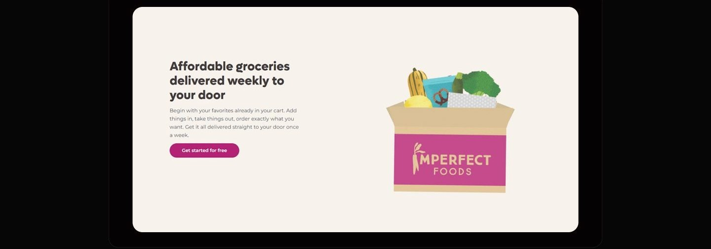
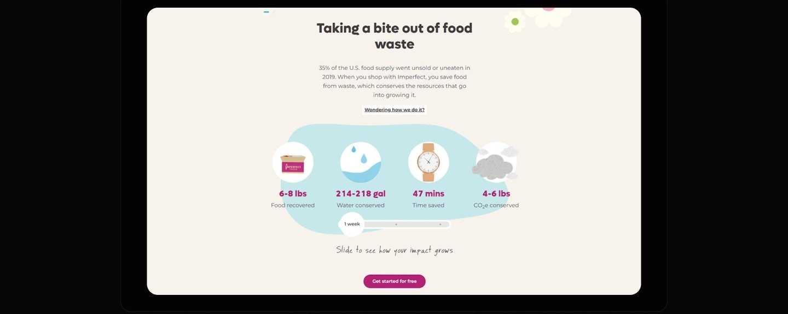
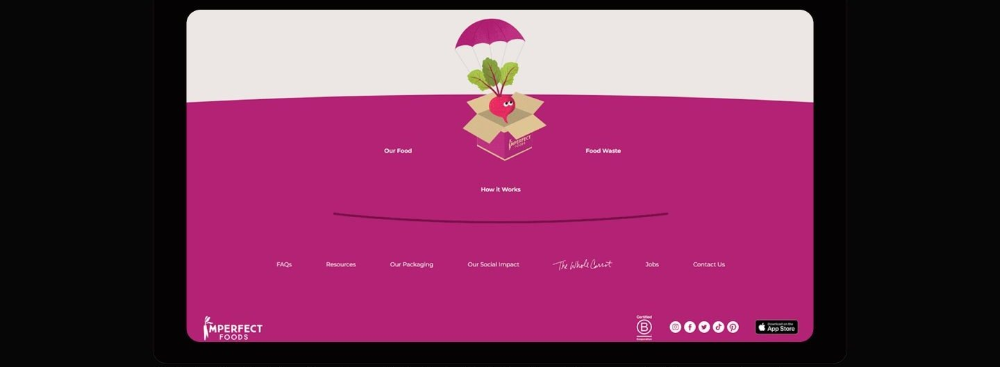
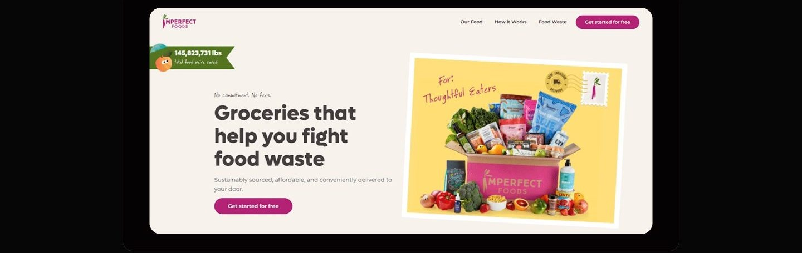
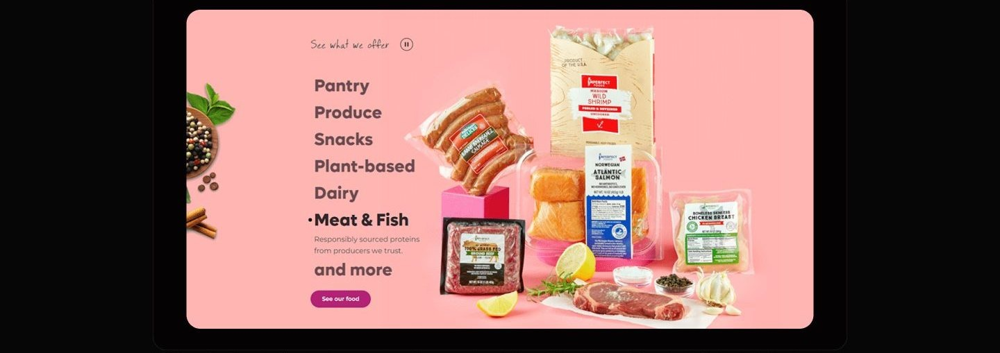
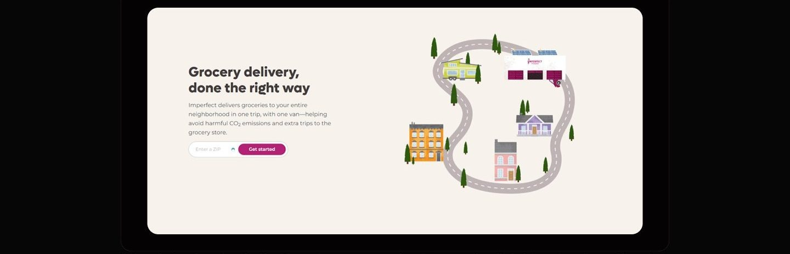
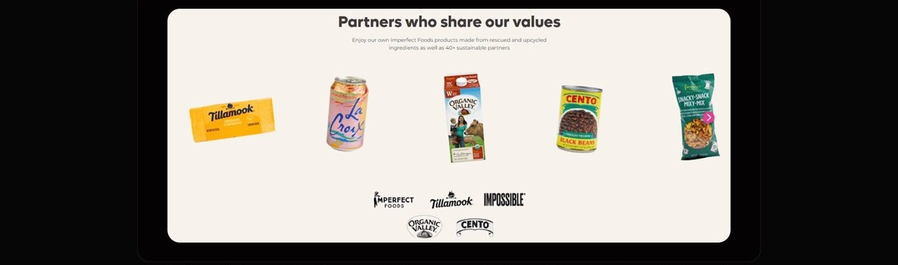
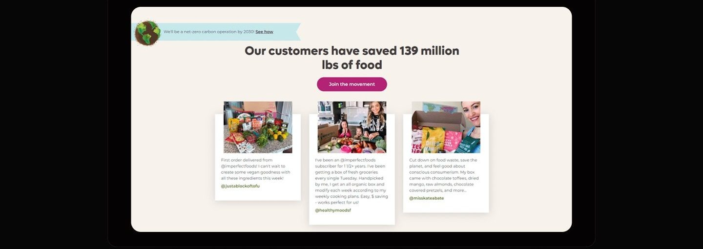
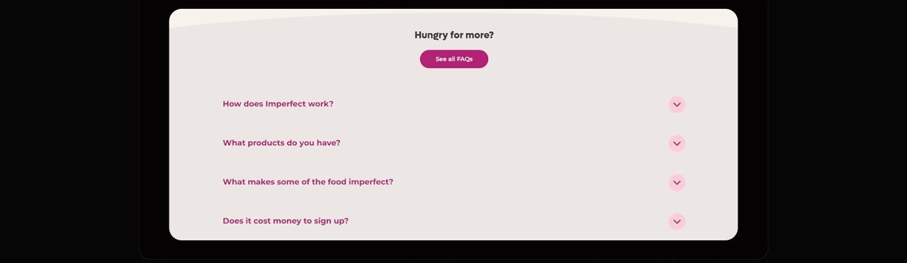

Case study 04 of 11 · Mobile commerce · Independent concept project
Imperfect Foods
Selling ugly produce means selling trust: a storefront that makes the sustainable order the easy one.
5 min read

One page has to teach food rescue, defuse subscription anxiety, and sell groceries at the same time, without any of the three slowing the other two.
Notice how every mission moment sits directly beside a low-friction action, so conviction and conversion never compete for the same click.
The sustainable choice has to be the easy one
People already want to fight food waste; what stops them is a storefront that makes rescuing groceries feel like homework. Imperfect Foods sells produce that is perfectly edible but cosmetically rejected, through a weekly subscription. That model inherits every doubt of online grocery, then adds two of its own: is imperfect food actually good, and what am I committing to?
- Affordable and healthy read as opposites, so shoppers assume the sustainable option costs more.
- Sourcing is opaque on most platforms, which is fatal for a brand whose whole pitch is where the food comes from.
- Subscription language triggers commitment anxiety before the value is ever demonstrated.
Desk research compared Misfits Market, Thrive Market, FreshDirect, and Whole Foods via Amazon Fresh across value communication, product clarity, and onboarding friction.
The calls that shaped it
A cart that starts full and stays editable
Pre-filling the box removes the cold start, but only if the copy hands control back in the same breath. The competitive scan showed commitment anxiety killing signups: Misfits Market gates products behind an account, Thrive Market gates them behind a membership. So the service section leads with the opposite promise: your favorites are already in the cart, and you can add things in, take things out, and order exactly what you want. The hero reinforces it before the pitch even lands, with no commitment and no fees stated above the headline. I considered the standard alternative, an empty cart fed by a preference quiz, which signals control just as well but stacks steps in front of the first moment of value. Pre-filling carries its own risk of feeling presumptuous, which is why the copy is built from editing verbs rather than recommendation language.

Mission proof at every scroll stop, action always adjacent
The mission earns attention only if it never costs a click. The journey map located the real doubt at evaluation: is the food fresh, can I trust this brand, are the prices actually lower. So instead of quarantining sustainability content on an about page, proof is threaded through the scroll: a running tally of food saved rides above the hero headline, an impact section breaks one weekly box into food recovered, water conserved, time saved, and carbon avoided, and a slider lets the reader scale that story across weeks. Each of these moments keeps a CTA within reach, so being convinced and getting started are the same gesture. A dedicated impact page was the considered alternative; it would let the story breathe but pulls exactly the hesitant readers off the conversion path at their most persuadable moment. The tradeoff is density, managed by giving each proof point its own section rather than stacking statistics.

A warm system for a utilitarian errand
Warmth is not decoration here; it is the argument that imperfect means charming, not defective. The product is cosmetically rejected food, so the visual language has to do persuasion the copy cannot: odd produce framed by a cold, clinical interface reads like damaged goods. The system pairs natural greens with a confident magenta, keeps Roboto as a plain-spoken workhorse for reading, and spends the personality budget on handwritten annotations and illustration, a delivery van looping one neighborhood road, a beet parachuting into the footer box. Competitor analysis pointed the same direction from the other side: Thrive Market's premium polish was logged as a weakness because it deters the price-conscious, and Whole Foods reads generic inside Amazon. The considered alternative, an all-photography art direction, would look more premium but flatten exactly the friendliness that makes the mission approachable. The bet is that a grocery errand done in a warm system starts to feel like participation rather than penance.

One scroll from skeptic to subscriber
The homepage is sequenced as an argument: prove the food is good, prove the model is easy, prove the impact is real, then answer what is left.






What testing could and could not tell me
The board carries a complete moderated test script, six scenarios running from first impression to first order, but no recorded sessions, so it establishes that the design is testable against real doubts, not that it resolves them.
As a concept project, testing was moderated task walkthroughs, not longitudinal use.
What I learned
Pre-filling is a promise about control, and the copy has to keep it. The moment the cart starts full, every sentence around it must be an editing verb, because a pre-filled box described in recommendation language flips from convenient to presumptuous. The words are load-bearing infrastructure for the flow, not polish on top of it.
Mission content converts as proof, not preamble. Sequencing sustainability into the scroll, tally, impact breakdown, slider, testimonials, each with an action beside it, treats the mission as evidence for a purchase decision rather than a values test the visitor must pass first. The discipline is refusing to let any mission moment exist without an adjacent next step.
A visual system can carry a positioning argument the copy never states. The warmth of the palette, the handwritten notes, and the parachuting beet all make one claim, that imperfect means charming, and they make it continuously, in the background, on every section. Choosing where a brand spends its personality budget is a product decision, and here it was spent reframing the product's supposed flaw.
Appendix: foundations and system
The system underneath the warmth is strict: a fixed desktop grid, stepped color ramps with named families, and a defined button set. The looseness on the surface is only affordable because the structure below is not loose at all.